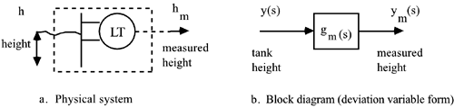

| [ Team LiB ] |
|
5.2 Development of Control Block DiagramsControl block diagrams are used to analyze the dynamic effect of feedback control loops. All dynamic elements in a control loop are combined, using their Laplace transfer function representation. In this section we use the control strategy from Figure 5-1 (where the inlet flow rate is manipulated) for illustration. Block diagrams are based on Laplace domain signals, which are assumed to be in deviation variable (perturbations from steady state) form. The block diagram for Figure 5-1 has the following components:
Controller Transfer FunctionNotice first that the level controller compares the measured tank level (hm) to the desired tank level (hsp). The desired tank level is known as the setpoint, and the difference between the setpoint and the measured process output is the error. From the proportional control law (algorithm) for this system [Equation (5.2)], realizing that b = Pv1s (steady-state pressure to valve), we find the controller input-output relationship where the controller input signal is the error, which is the difference between the setpoint and measured process output. We write the equation [where c(s) is the controller output, the pressure to the valve] which is the transfer function form for a proportional-only controller. A block diagram for the controller is shown in Figure 5-4, where gc(s) = kc. For convenience when analyzing block diagrams, the comparator is shown outside the controller transfer function block. The block diagram uses r(s) to represent the setpoint, and ym(s) to represent the measured process output. Figure 5-4. Block diagram relationship for controller transfer function. The orientation for the transfer function representation of the controller is slightly different from that of the physical system.Valve Transfer FunctionThe block diagram for the valve is shown in Figure 5-5. The input signal is the pressure to the valve top and the output is the flow rate of fluid through the valve. Figure 5-5. Block diagram of valve and the physical system.Process Transfer FunctionThis process block diagram is shown in Figure 5-6. The input to the block is the flow rate to the tank, and the output is the tank level. Figure 5-6. Block diagram of the manipulated input effect on the process.Disturbance Transfer FunctionThis disturbance (outlet flow rate) block diagram is shown in Figure 5-7. The disturbance input is the flow rate from the tank (which may be due to changes in a downstream control valve not shown), and the output is the tank level. Figure 5-7. Block diagram of the disturbance input effect on the process.Measurement (Sensor) Transfer FunctionThis measurement block diagram is shown in Figure 5-8. The input to the block is the tank level and the output is the actual measurement of tank level. Figure 5-8. Block diagram of sensor. Control Block DiagramWe can combine Figures 5-4 to 5-8 to obtain the feedback control system block diagram shown in Figure 5-9. This is similar to the conceptual block diagram developed in Chapter 1 (Figure 1-4). There are two externally supplied signals, the setpoint (desired tank height) and the load disturbance (flow rate to downstream process). Figure 5-9. Control system block diagram.We often assume that the output variable can be perfectly measured, and that process input (usually a flow rate) is directly manipulated; in this case we do not include the valve and measurement transfer functions in the closed-loop block diagram. Equivalently, we can "lump" the valve and measurement dynamics into the process transfer function, again allowing us to neglect the valve and measurement transfer functions. Similarly, the measurement device can be lumped into the disturbance transfer function. |
| [ Team LiB ] |
|